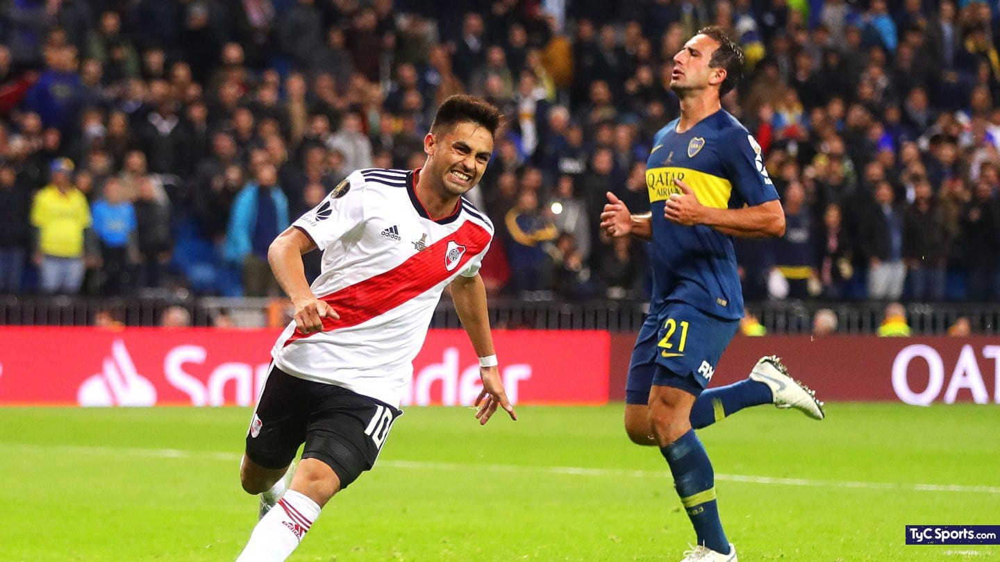

9 de diciembre de 2018
El 9 de diciembre de 2018 se escribió una de las páginas más extraordinarias del fútbol argentino. Por primera vez en la historia, dos equipos del mismo país disputaron la final de la Copa Libertadores, y lo hicieron en el mítico Santiago Bernabéu de Madrid.
River Plate, dirigido por Marcelo Gallardo, llegó a la final tras eliminar a Racing, Independiente y Grêmio. Boca Juniors, con Guillermo Barros Schelotto al mando, superó a Cruzeiro, Palmeiras y Corinthians.
El partido de ida en La Bombonera terminó 2-2. La vuelta, programada para el 24 de noviembre en el Monumental, fue suspendida tras el ataque de hinchas de Boca al micro de River, que dejó jugadores lesionados. CONMEBOL decidió jugar la final en terreno neutral.
El 9 de diciembre, 62.000 espectadores llenaron el estadio del Real Madrid. Más de 50.000 argentinos viajaron a España para presenciar este encuentro histórico.
Con goles de Pratto (antes del descanso) y Martínez y Quintero (en el segundo tiempo), River Plate se impuso 3-1 (5-3 en el global) consiguiendo su cuarta Copa Libertadores.
Esta final no solo marcó un hito deportivo, sino que demostró la pasión del fútbol argentino. Gallardo consolidó su legado como el mejor técnico de la historia de River, y el equipo mostró una grandeza incomparable en el momento decisivo.
River 3-2 Boca - Final Madrid (2019)